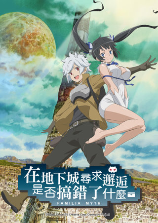

AnimeInterester
在地下城尋求邂逅是否搞錯了什麼

故事簡介
迷宮都市歐拉麗，通稱「地下城」，是有廣大的地下迷宮的巨大都市。名為未知的興奮、光輝顯赫的榮耀、以及相遇可愛女生的浪漫，在這人們的夢想與欲望交集的城市裡，以冒險者為志願的少年貝爾，遇見了成員為0人的神明大人赫斯緹雅，由少年踏出、女神記敘的「眷族物語」的冒險即將展開。
製作人員
原作：大森藤ノ
角色原案：ヤスダスズヒト
導演：山川吉樹
系列構成：白根秀樹
角色設計：木本茂樹
監製：GENCO
製作：ダンまち製作委員会
聲優名單
貝爾‧克朗尼：松岡禎丞
赫斯緹雅：水瀬祈
艾絲·華倫斯坦：大西沙織
莉莉露卡·厄德：内田真禮
埃伊娜·祖爾：戸松遥
希兒·福羅瓦：石上静香
各集標題
| 話數 | 標題 |
|---|---|
| 1 | 冒險者“貝爾．克朗尼” |
| 2 | 怪物嘉年華 |
| 3 | 女神之刃 |
| 4 | 弱者(支援者) |
| 5 | 魔導書 |
| 6 | 理由(莉莉露卡．厄德) |
| 7 | 劍姬 (艾絲．華倫斯坦) |
| 8 | 英雄願望 |
| 9 | 鍛造師 (維爾．克羅佐) |
| 10 | 怪物奉上 |
| 11 | 迷宮樂園 |
| 12 | 惡意 |
| 13 | 眷族神話 |